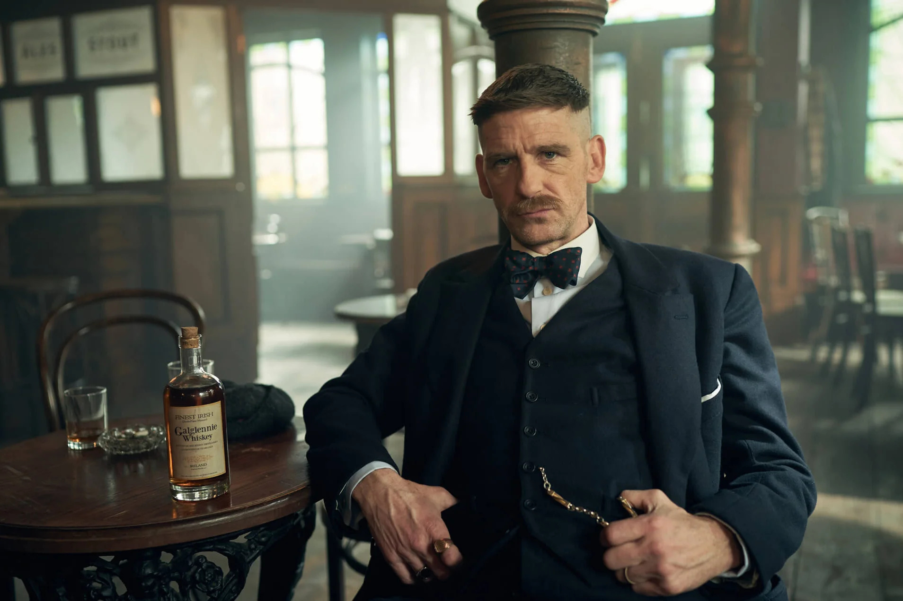

Arthur Shelby é o filho mais velho de Arthur e Mrs Shelby , irmão mais velho de Thomas , John , Ada e Finn Shelby , além de ser o pai de Billy Shelby . Ele foi casado com Linda Shelby , e é um membro forte dos Peaky Blinders . Ele também é vice-presidente adjunto da Shelby Company Limited e membro da ICA, atuando como braço direito de seu irmão.
Arthur Shelby Jr. nasceu em uma família de ciganos e viajantes irlandeses. Crescendo, Arthur lutava regularmente com seus irmãos e era conhecido como o mais forte. Ele uma vez foi espancado por Tommy, ele também segurou 12 policiais com um gancho de barco, mostrando que ele deixou Tommy vencer. Está implícito que ele teve problemas de raiva quando criança e entrou em muitas brigas. Durante a guerra na França, Arthur foi um Sabotador com seu irmão Thomas , cavando túneis muito traiçoeiros para colocar uma enorme quantidade de explosivos sob as posições inimigas: uma tática usada várias vezes na guerra com efeito devastador na Batalha de Verdun e a Batalha do Somme. Sugere-se que ele pode ter servido em Gallipoli por seu desgosto pelos turcos e pelo cheiro de água estagnada.

Arthur é um personagem muito complexo, ele é muito leal à sua família e tem grande remorso por suas ações. Ele também é muito rápido para se irritar. Ele é capaz de atos muito maus e brutais, como quando Billy Grade matou um árbitro inocente porque ele iria expor sua corrupção.